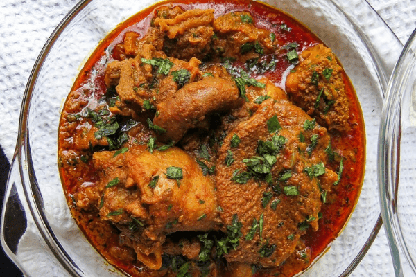

Ofeakwu

Ofeakwu is an Igbo delicacy dating more than five hundred years.
its main ingredience is the Palm fruit.
Fish and assorted meat are normally used to ganish it
Ingredients
- Palm fruits
- Smoked fish
- Assorted meat
- Pumpkin leaves
- Onions
- Pepper
- Salt
Steps
- Boil palm fruits
- Mash palm fruit
- Wash and sieve out the chaff keeping the oily water
- Boil the oil for 30 minutes
- Parboil the fish and meat
- Pour both on the same pot and cook for 30 minutes
- add ingridients to taste
- wash and cut punpkin leaves to small sizes
- add the cut leaves and boil for 2 minutes
- Food is Ready